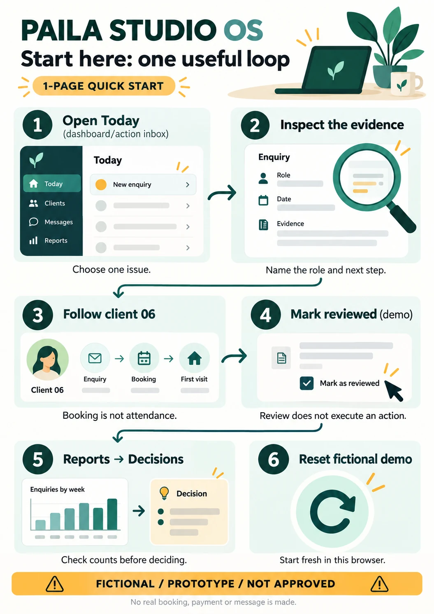

Start here: one useful loop


Read the detailed text
Know what you are seeing
This live website is a shareholder-review demo. Every client, amount, capacity and rule is FICTIONAL / PROTOTYPE / NOT APPROVED. The displayed date is a fixed sample snapshot, not today’s real studio activity.
Open Today
Read the action queue first. Choose one action; check its evidence, responsible role, due date and review gate. Click its title to open the relevant screen.
Follow one client
Open Client journey. Choose Fictional client 06 in “Inspect client.” Look at the completed first visit, next action and responsible role. A booking is not the same as a completed visit.
Try one safe action
Return to Today and press “Mark reviewed (demo)” on one action. This acknowledges a fictional review; it does not contact a person or approve a policy.
Review before deciding
Open Reports for counts, then Management & decisions for the current constraint and proposed experiment. Ask what the evidence supports before changing anything.
Start fresh
Use “Reset fictional demo” on a workspace screen. Browser demo changes are not shared with other people; no real booking, payment or message is made.
Open the screens: Open Today · Follow fictional client 06 · Open decisions